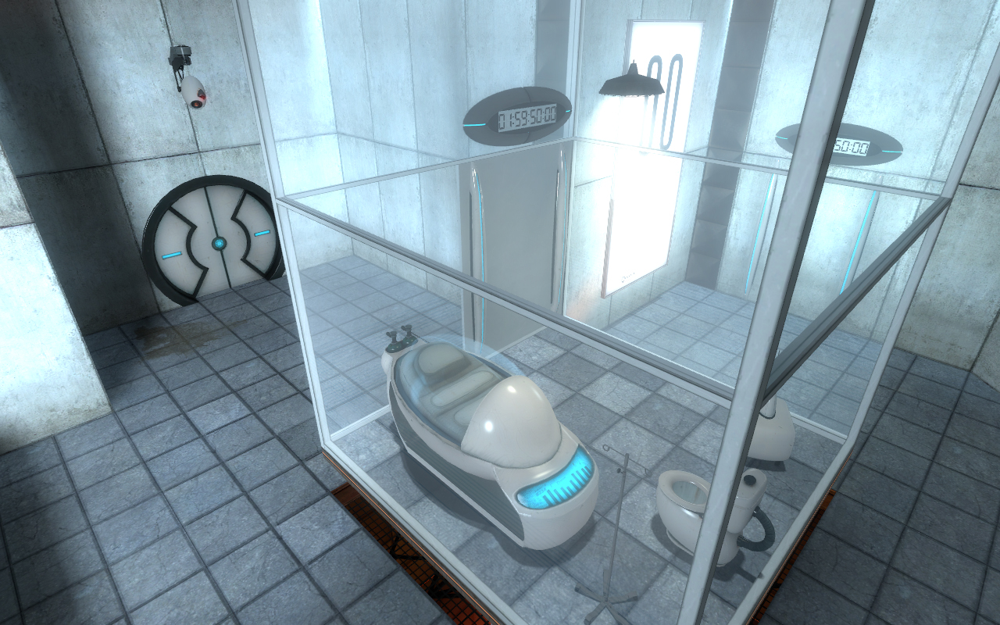
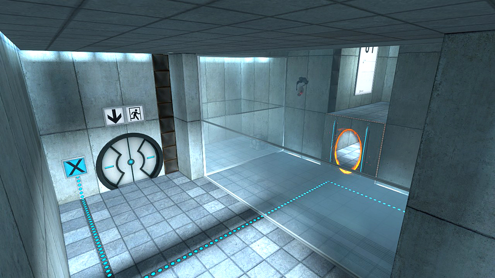
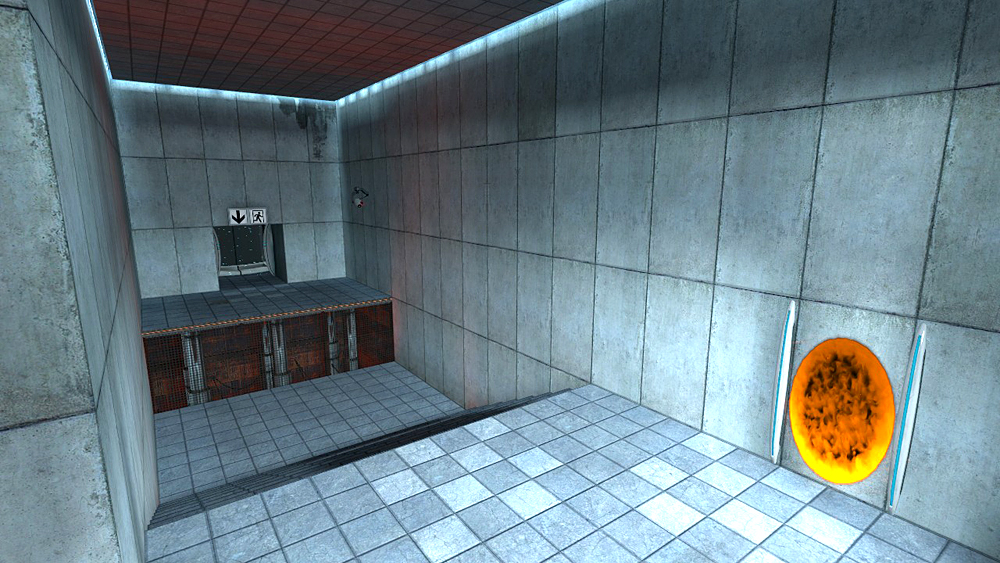
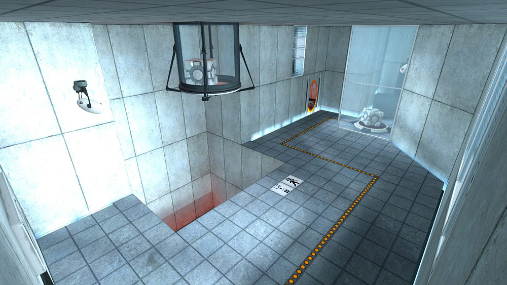
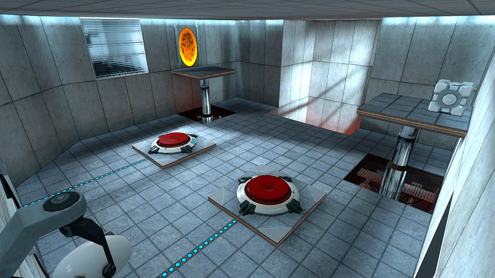

Secure Terminal Login
Aperture History:
1953 - Aperture science begins operations as manufacturer of shower curtains. Early product line provides a very low-tech portal between the inside and outside of your shower. Very little science is actually involved. The name is chosen to make the curtains appear more hygienic.
1956 - Eisenhower administration awards Aperture a contract to provide shower curtains to all branches of the military except the Navy.
1957-1975 - Mostly shower curtains.
1978 - Aperture Founder and CEO, Cave Johnson, is exposed to mercury while secretly developing a dangerous mercury-injected rubber sheeting from which he plans to manufacture 7 deadly curtains to be given as gifts to each member of the House Naval Appropriations committee.
1979 - Both of Cave Johnson's kidneys fail. Brain damaged, dying, and incapable of being convinced that time is not now flowing backwards, Johnson lays out a three tiered R&D program. The results, he says, will 'guarantee the continued success of Aperture Science far into the fast-approaching distand past.'
Tier1: The Heimlich Counter-Maneuver - A riliable technique for interrupting the life-saving Heimlich Maneuver.
Tier2: The Take-A-Wish Foundaition - A charitable organization that will purchase wishes from parents of terminally ill children and redistribute them to wish-deprived but otherwise healthy adults.
Tier3: 'Some kind of rip in the fabric of space... That would... Well, it"d be like, I don't know, something that would help with the shower curtains I guess. I haven't worked this idea out as much as the wish-taking one.'
1981 - Diligent Aperture engineer complete the Heimlich Counter-Maneuver and Take-A-Wish Foundation initiatives. The company announces products related to the resrarch in a lavish, televised ceremony. These products become immidiatly wildly unpopular. After a string of very public choking and despondent sick child disasters, senior company officials are summoned before a Senate investigative comittee. During these proceedings, and engineer mentions that some progress has been made on Tier 3, the 'man-sized ad hoc quantum tunnel trough physical space with possible applications as a shower curtain.' The comittee is quickly permantly recessed, and Aperture is granted an open-ended contract to secretly continue on the 'Portal' and Heimlich Counter-Maneuver projects.
1981-1985 - Work progresses on the 'Portal' project. Several high ranking Fatah personell choke to death on lamb chunks despite the intervention of their bodyguards.
1986 - Word reaches Aperture management that another defense contractor called Black Mesa is working on a similar portal technology. In response to this news, Aperture begins developing the Genetic Lifeform and Disk Operating System (GLaDOS), and artificially intelligent research assistand and disk operating system.
1996 After a decade spent, they bring the disk operating parts of GLaDOS to a state or more or less basic functionality, work begins on the Genetic Lifeform component.
Several years later - The untested AI is activated to the first time as one of the planned activities on Aperture's first annual bring-your-daughter-to-work day.
In many ways, the initial test goes well...
[END]